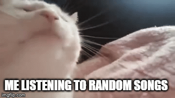

Kim jestem?
Tak jak wspomniałam już wcześniej, nazywam się Karolina. Pochodzę z powiatu Nowotarskiego a dokładniej z Rabki-Zdroju. Cóż mogę o sobie powiedzieć? Otóż - jestem niską brunetką o brązowych oczach. Z charakteru bywam miła i spokojna. Mam dwie starsze siostry. Odkąd pamiętam interesuję się głównie informatyką - w końcu też ukończyłam technikum informatyczne - w Mszanie Dolnej, ale bardziej o swoich pasjach rozpiszę później. Będąc w technikum ukończyłam kurs "Programowania sterowników logicznych PLC"
Od października 2023 roku uczęszczam na studia w Akademii Nauk Stosowanych w Nowym Targu na kierunku Informatyka Ekonomiczna. Aktualnie jestem w posiadaniu rudego kota i także rudego - psa. Pracowałam przez wakacje i weekendy jako kelnerka - nawet lubiłam tę pracę, bo spotykałam rozmaitych i ciekawych klientów, z którymi mogłam pożartować. Jednakże musiałam zrezygnować ze względu na studia.
